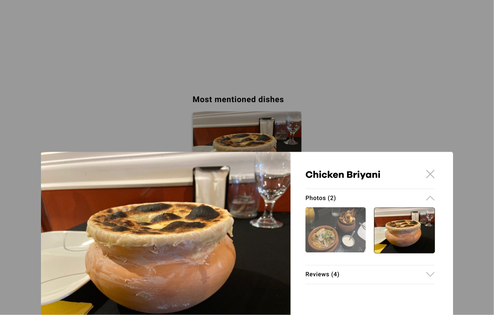

IDM 241 - Alpha Build
Yelp Microinteraction -
Link
Trigger:
- Hover over photo
- Click on photo
- Hover over X
Rules:
- Cursor changes to pointer when hovering over image
- On hover the photo expands
- On hover a drop shadow appears
- On hover a new photo fades in on top of current photo after 2 seconds
- Photo goes back to original size when hovered off photo
- Drop shadow disappears when hovered off photo
- Remain on same photo the slideshow was on when hovered off photo
- When the photo is clicked on a modal pops up with a larger image of what was clicked on and with more photos and reviews on the righthand side
- The modal slides up from the bottom and a black background with 50% opacity fades in behind the modal
- When user hovers over the x on the modal, the cursor changes to pointer and the X hover state changes from grey to black
- When x is clicked on the modal, the background fades out back to 0% opacity and the modal slides off the screen towards the bottom
Feedback:
- Cursor changes to pointer when hovering over image
- On hover the photo expands
- On hover a drop shadow appears
- On hover a new photo fades in on top of current photo after 2 seconds
- Photo goes back to original size when hovered off photo
- Drop shadow disappears when hovered off photo
- Remain on same photo the slideshow was on when hovered off photo
- When the photo is clicked on a modal pops up with a larger image of what was clicked on and with more photos and reviews on the righthand side
- The modal slides up from the bottom and a black background with 50% opacity fades in behind the modal
- When user hovers over the x on the modal, the cursor changes to pointer and the X hover state changes from grey to black
- When x is clicked on the modal, the background fades out back to 0% opacity and the modal slides off the screen towards the bottom
Loop & Modes:
- Slideshow repeats until user is no longer hovering over the photo
- When user clicks on the image, a modal comes up on the screen and when the user hovers over the X it changes from grey to black to indicate the user can click on it to close the modal.


